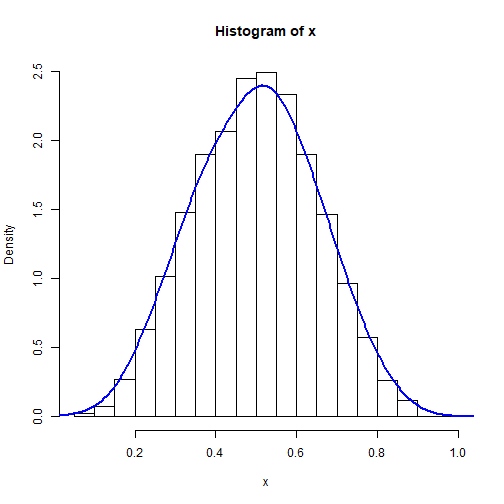
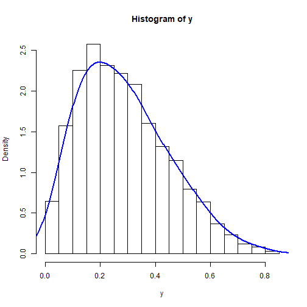
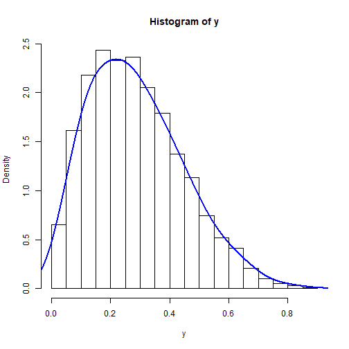
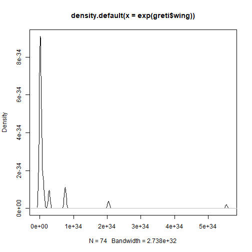
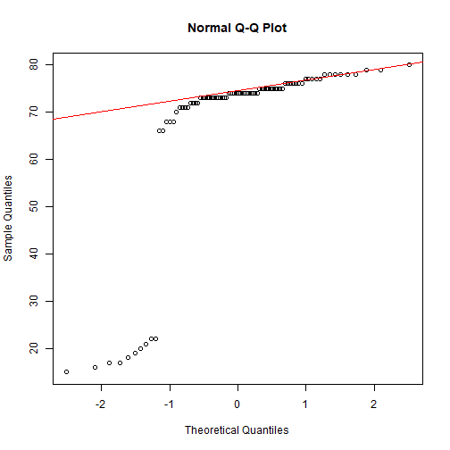
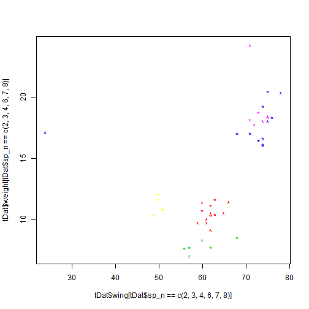

BL6024 - Quantitative Skills for Biologists using R
Lecture 02: Data exploration and visualisation
Previously
In the first class, we learned:
- Data types
- Arthimetic
- Storing variables
- Working with data frames
In this class, we will explore:
- Checking normality, homescedastiticty, outliers and transformations
- Basic plots
- ggplot2
- Main types of plots
Normality

Does a sample of continuous data come from a normal (Gaussian) distribution. We can use visual inspection and normality tests to find out whether our data are normal or not. Normality tests assess the null hypothesis:
- H0: There is no observable difference between data and normal distribution
These tests can inform our analyses. For example, if we want to use 2-sample t-tests to compare two samples of data, both should come from normal distributions and have similar variances.
Normal distributions
x <- rbeta(5000,5,5)
hist(x, prob = TRUE)
lines(density(x, adjust=2), col="blue", lwd=2)
shapiro.test(x)
##
## Shapiro-Wilk normality test
##
## data: x
## W = 0.99562, p-value = 4.35e-11
Let's use the bird dataset (tdat.csv), provided prior to this class.
setwd("C:/Users/Anthony Caravaggi/Dropbox/GitHub/BL6024_UCC_2017/Lecture 02")
tDat <- read.csv("assets/img/tDat.csv", header = TRUE, stringsAsFactors=FALSE)
head(tDat)
## ï..Date Code Sp_C Sp_L Type Age Sex Wing Weight
## 1 19/06/2011 BLABI Blackbird Turdus merula N 3 JM 135 98.8
## 2 01/07/2011 BLABI Blackbird Turdus merula R 3 J 126 88.4
## 3 01/07/2011 BLABI Blackbird Turdus merula N 3 J 127 89.8
## 4 07/08/2011 BLABI Blackbird Turdus merula N 3 J 132 91.1
## 5 07/08/2011 BLABI Blackbird Turdus merula N 3 J 131 95.3
## 6 13/08/2011 BLABI Blackbird Turdus merula N 3 M 129 101.3
Histograms and density plots allow us to look at the curve
greti <- tDat[tDat$Sp_C == "Great tit", ]
hist(greti$Weight, prob = TRUE)
lines(density(greti$Weight, adjust=2), col="blue", lwd=2)
plot(density(greti$Wing))
Q-q plots plot the quantiles (fraction of points below a given value) of the first dataset against the quantiles of the second dataset.
qqnorm(greti$Weight);qqline(greti$Weight, col = 2)

qqnorm(greti$Wing);qqline(greti$Wing, col = 2)

Formally testing for normality
Eyeballing the data can leave much to interpretation, and there's no guarantee that others will agree with your definition of 'normal'. To quantify the state of our data, we want to calculate the probability ('p-value') that our data are from a normal distribution.
The lower the p-value, the greater the chance that your data deviate from normality. We use a value of 0.05 as a threshold - when the p-value is lower than 0.05, we can have confidence in stating that the data deviate from normality.
There are a number of formal tests available in R, e.g. te nortest package. We'll just stick with Shapiro-Wilk, available in base R via shapiro.test().
Shapiro-Wilk test
shapiro.test(greti$Weight)
##
## Shapiro-Wilk normality test
##
## data: greti$Weight
## W = 0.98897, p-value = 0.736
shapiro.test(greti$Wing)
##
## Shapiro-Wilk normality test
##
## data: greti$Wing
## W = 0.45546, p-value = 1.33e-15
Clearly, something is skewing the wing length data. But what is it?
greti$Wing
## [1] 23 24 24 24 23 73 73 75 75 76 77 71 68 74 75 75 72 78 73 73 78 74 74
## [24] 77 78 68 68 66 66 73 77 78 72 78 73 80 77 71 76 72 74 75 75 73 77 74
## [47] 74 74 74 74 73 72 74 73 74 76 76 76 71 70 71 74 73 79 75 73 73 74 79
## [70] 74 74 75 78 75 76 76 75 75 73
greti[greti$Wing <= 24, ]
## ï..Date Code Sp_C Sp_L Type Age Sex Wing Weight
## 170 23/05/2015 GRETI Great tit Parus major N 1 23 17.0
## 171 23/05/2015 GRETI Great tit Parus major N 1 24 17.2
## 172 23/05/2015 GRETI Great tit Parus major N 1 24 16.4
## 173 23/05/2015 GRETI Great tit Parus major N 1 24 18.1
## 174 23/05/2015 GRETI Great tit Parus major N 1 23 16.7
We need to remove these data so that all remaining birds are fledged juveniles and adults.
greti <- greti[!greti$Wing <= 24,]
min(greti$Wing)
## [1] 66
shapiro.test(greti$Wing)
##
## Shapiro-Wilk normality test
##
## data: greti$Wing
## W = 0.94789, p-value = 0.004131
plot(density(greti$Wing))

Skew
If data are skewed, they are asymmetric relative to the normal distribution. The mean is typically less than the median and the tail of the distribution is longer on one side than the other.
Use of skewed data can lead to incorrect results if the data are used inappropriately in statistical tests.
If we want to use 2-sample t-tests to compare two samples of data, both should come from normal distributions and have similar variances.
Positive skew
y <- rbeta(5000,2,5)
hist(y, prob = TRUE)
lines(density(y, adjust=2), col="blue", lwd=2)

Negative skew
x <- rbeta(10000,5,2)
hist(x, prob = TRUE)
lines(density(x, adjust=2), col="blue", lwd=2)
Transformations
Trasformations change the shape of a distribution or relationship by replacing a variable by a function of that variable. It is used to coerce variables to similar distributions and address data which violate model assumptions.
Why might we want to transform our data?
- Convenience
- Reducing skewness
- Equal spread
- Modelling relationships (two or more variables)
Most parametric tests require that residuals be normally distributed and that the residuals be homoscedastic (even variance).
You must be careful about how you report results from analyses with transformed variables!
Standardisation
Standardised values have a mean of 0 and a standard deviation of 1. Standardised variables are useful for comparing variables of different units.
p <- runif(1000, min=2, max=10)
r <- runif(1000, min=50, max=100)
pr <- data.frame(p,r)
head(pr)
## p r
## 1 6.316312 73.52573
## 2 2.467157 57.49076
## 3 9.609054 95.68523
## 4 8.317026 93.02424
## 5 2.639461 81.21698
## 6 3.655211 67.04794
p2 <- as.data.frame(scale(pr))
head(p2)
## p r
## 1 0.1405076 -0.1078671
## 2 -1.4826155 -1.2102311
## 3 1.5290006 1.4155428
## 4 0.9841744 1.2326068
## 5 -1.4099575 0.4208873
## 6 -0.9816333 -0.5531987
Standardisation doesn't affect the shape of the distribution
hist(pr$r, prob = TRUE)
lines(density(pr$r, adjust=2), col="blue", lwd=2)

hist(p2$r, prob = TRUE)
lines(density(p2$r, adjust=2), col="blue", lwd=2)

Equal spread (homoscedasticity)
Homoscedasticity of residuals is an important assumption of linear regression. The variance of residuals should not increase relative to the response variable. Transformation of heteroscedastic data so that residuals are evenly spread eases data handling and interpretation.

lmMod <- lm(dist ~ speed, data=cars)
par(mfrow=c(2,2)) # init 4 charts in 1 panel
plot(lmMod)

Top-left
- Residuals vs fitted
Bottom-left
- Standardised residuals
Are points randomly and evenly distributed?
Reducing skewness
- square (x2)
- logarithm (log, log10, ln)
- exponential
- square root
- cube root
Which transformation to use?
- What works with the data?
- What makes contextual sense?
- What keeps dimensions simple and convenient?
Positive skew = square root, cube root & log Negative skew = exponential, square root (constant - x), cube root (constant - x), log (constant - x)
Positive (right) skew
hist(y, prob = TRUE)
lines(density(y, adjust=2), col="blue", lwd=2)

Positive skew
hist(y, prob = TRUE)
lines(density(y, adjust=2), col="blue", lwd=2)

Square root
hist(sqrt(y), prob = TRUE)
lines(density(sqrt(y), adjust=2), col="blue", lwd=2)
Negative (left) skew
hist(x, prob = TRUE)
lines(density(x, adjust=2), col="blue", lwd=2)

Negative skew
hist(x, prob = TRUE)
lines(density(x, adjust=2), col="blue", lwd=2)

Exponential
hist(exp(x), prob = TRUE)
lines(density(exp(x), adjust=2), col="blue", lwd=2)

Back to the bird data
plot(density(greti$Wing))

Back to the bird data
plot(density(greti$Wing))

plot(density(log(greti$Wing)))
plot(density(exp(greti$Wing)))

plot(density(sqrt(greti$Wing)))

Outliers
Outliers are data points which are located an abnomal distance from other values in a dataset. A dataset may have one or more outliers. The definition of 'abnormal' can be subjective, so you should take care to explain your definition.
One commonly-used definition is that of a data point which falls 1.5x the interquartil range above the third quartile or below the first quartile.
Outliers are often problematic for data analyses as they can distort model estimates and predictions.
Identifying and removing outliers
greti_outliers <- data.frame(Date = rep("11/12/2012", 10), Code = rep("GRETI", 10),
Sp_C = rep("Great tit", 10), Sp_L = rep("Parus major", 10),
Type = rep("N", 10), Age = rep("3", 10), Sex = rep("F", 10),
Wing = sample(15:23, 10, replace=TRUE), Weight = sample(4:8, 10, replace=TRUE))
greti2 <- rbind(greti, greti_outliers)
With and without outliers
plot(greti2$Wing, greti2$Weight, main="With Outliers",
xlab="wing length (cm)", ylab="weight (g)", pch="*",
col="red", cex=2)
plot(greti$Wing, greti$Weight, main="Without Outliers",
xlab="wing length (cm)", ylab="weight (g)", pch="*",
col="red", cex=2)

To identify the outliers, compute the I and IV quartiles using the quartile function. The compute the range using IQR
quantiles <- quantile(greti2$Wing, probs = c(.25, .75))
range <- 1.5 * IQR(greti2$Wing)
We can then subset the data, excluding the outliers
greti_normal <- subset(greti2, greti2$Wing > (quantiles[1] - range)
& greti2$Wing < (quantiles[2] + range))
min(greti_normal$Wing)
## [1] 68
plot(greti$Wing, greti$Weight, main="Without Outliers",
xlab="wing length (cm)", ylab="weight (g)", pch="*",
col="red", cex=2)
Plotting data
Bar plot represent data in bars where height is reflective of the value.
sp <- table(tDat$Code)
barplot(sp)

Scatter plots are probably the most commonly used plot type in the biological sciences. Points represent the spatial locations of data from X and Y coordinates.
x <- rnorm(50)
y <- x * 2 + rnorm(50, 0, 0.5)
plot(x, y)
abline(a = 0, b = 2)
A scatterplot uses the generic function plot. We add a line with the function abline, which uses an intercept (here 0) and a slope (here 2):

We can also plot a line based on a linear regression
plot(x, y, main = "Plot of X by Y", xlab = "X variable", ylab = "Y variable", xlim = c(-2,2), ylim = c(-4, 2))
lm1 <- lm(y ~ x)
abline(lm1, lty = 2, lwd = 2, col = "blue")

Boxplots display the minimum, first quartile, median, third quartile, and maximum.
boxplot(tDat$Wing)
boxplot(tDat$Wing ~ tDat$Code)

Histograms represent the probability distribution of continuous numerical data.
rand <- rnorm(1000)
hist(rand)
hist(rand, main = "Normal distribution (frequency)",
br = -50:50/10)
hist(rand, main = "Normal distribution (frequency)", br = -50:50/10, freq = FALSE)
lines(-50:50/10, dnorm(-50:50/10), lwd = 3, col = "red", lty = 2)

Conditioning plots (coplots)
tDat2 <- subset(tDat, tDat$Code %in% c("BLUTI", "CHIFF", "WREN"))
coplot(tDat2$Wing ~ tDat2$Weight | tDat2$Code, columns=3)

tDat2 <- subset(tDat, tDat$Code %in% c("BLUTI",
"CHIFF", "WREN"))
coplot(tDat2$Wing ~ tDat2$Weight | tDat2$Code,
cex=1.5, number=3, columns=3,
panel=function(x,y,...) {
panel.smooth(x,y,span=.8,iter=5,...)
abline(lm(y ~ x), col="blue")
} )

Plot aesthetics
Different coloured points for each group (species)
library(car)
unique(tDat$Code)
tDat$Sp_N <- recode(tDat$Code, "'BLABI'=1; 'BLUTI'=2;
'CHIFF'=3; 'GRETI'=4;'GREWO'=5;
'ROBIN'=6; 'WREN'=7; 'BLACA'=8",
as.numeric.result=TRUE,
as.factor.result = FALSE)
plot(tDat$Wing, tDat$Weight, col = tDat$Sp_N, pch="*")

We can also plot subsets
plot(tDat$Wing[tDat$Sp_N==c(2,3,4,6,7,8)],
tDat$Weight[tDat$Sp_N== c(2,3,4,6,7,8)],
col = tDat$Sp_N[tDat$Sp_N==c(2,3,4,6,7,8)],
pch="*"))
Bar plot
ggplot
First, we need to load the ggplot package
library(ggplot2)
The following command initiates the creation of the plot with default aesthetics.
p <- ggplot(tDat, aes(Code))
We then add the command to draw the barplot
p + geom_bar()

We can easily manipulate the plot by using aesthetic commands
library(ggplot2)
p <- ggplot(tDat, aes(Sex, Age)) # X by Y
p + geom_bar(stat="identity") + # bar height
theme_classic() + # Standard theme
labs(title = "Age and sex of ringed birds",
x = "Age (BTO code)",
y = "Sex",
caption = "(based on data from the BTO)")

sx <- subset(tDat, tDat$Sex %in% c("M", "F"))
p <- ggplot(sx, aes(Sp_C)) # X by Y
p + geom_bar(aes(fill = Sex)) +
coord_flip() +
theme(legend.position = "top",
text = element_text(size=20),
axis.text.x = element_text(angle=90, hjust=1)) +
labs(title = "Age and sex of ringed birds",
x = "Age (BTO code)",
y = "Sex")
## Error in ggplot(sx, aes(Sp_C)): object 'sx' not found
## Error: stat_count() must not be used with a y aesthetic.

p <- ggplot(tDat2, aes(Wing, Weight, colour = Code)) +
geom_point()
p + labs(colour = "Species code") +
labs(x = "Wing length (cm)",
y = "Weight (g)") +
theme_light()

Boxplots
ggplot(tDat, aes(Code, Wing)) +
geom_boxplot()
Histograms
ggplot(subset(tDat,Code %in% c("ROBIN")), aes(Weight)) +
geom_histogram(binwidth = 0.5)

library(ggplot2)
library(magick)
library(here)
p <- ggplot(tDat2, aes(Wing, Weight, colour = Code)) +
geom_point() +
labs(colour = "Species code") +
labs(x = "Wing length (cm)",
y = "Weight (g)") +
theme_light() +
ggtitle("Birds") +
ggsave(filename = paste0(here("/"), last_plot()$labels$title, ".png"),
width = 5, height = 4, dpi = 300)
background <- image_read(paste0(here("/"), "Birds.png"))
logo_raw <- image_read("assets/img/alpaca.gif")
frames <- lapply(logo_raw, function(frame) {
image_composite(background, frame, offset = "+70+800")
})
animation <- image_animate(image_join(frames))
image_write(animation, "assets/img/alpaca_plot.gif")
In-class CA
Data from AnAge: The Animal Ageing & Longevity Database (http://lib.stat.cmu.edu/datasets/sleep)
mDat <- read.csv("assets/img/mDat.csv", header = TRUE, stringsAsFactors=FALSE)
head(mDat)
## order family genus species name
## 1 Artiodactyla Antilocapridae Antilocapra americana Pronghorn
## 2 Artiodactyla Bovidae Addax nasomaculatus Addax
## 3 Artiodactyla Bovidae Aepyceros melampus Impala
## 4 Artiodactyla Bovidae Alcelaphus buselaphus Hartebeest
## 5 Artiodactyla Bovidae Ammodorcas clarkei Dibatag
## 6 Artiodactyla Bovidae Ammotragus lervia Aoudad
## f_maturity gestation litter_size litters_yr b_weight a_weight
## 1 547 235 2.0 1 3000 46100
## 2 1065 282 1.0 1 5600 92500
## 3 456 198 1.0 1 5550 52500
## 4 730 247 1.0 1 9050 159000
## 5 NA 204 1.0 NA NA 30500
## 6 335 149 1.2 2 4500 92500
## longevity_yr
## 1 15.5
## 2 28.0
## 3 25.6
## 4 22.5
## 5 NA
## 6 21.7